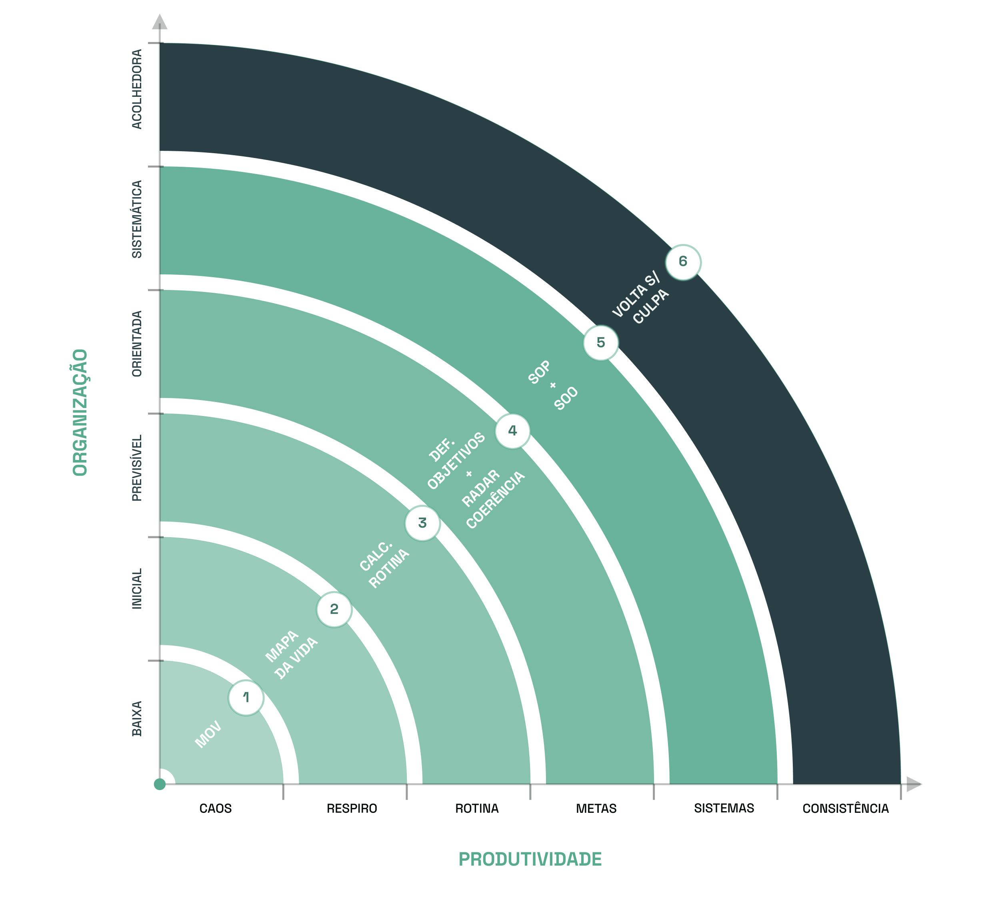
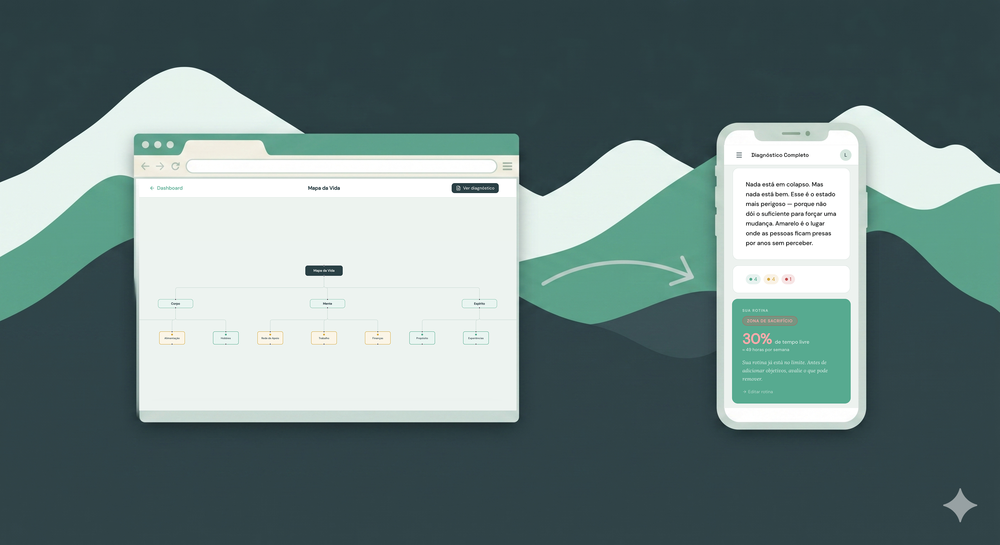
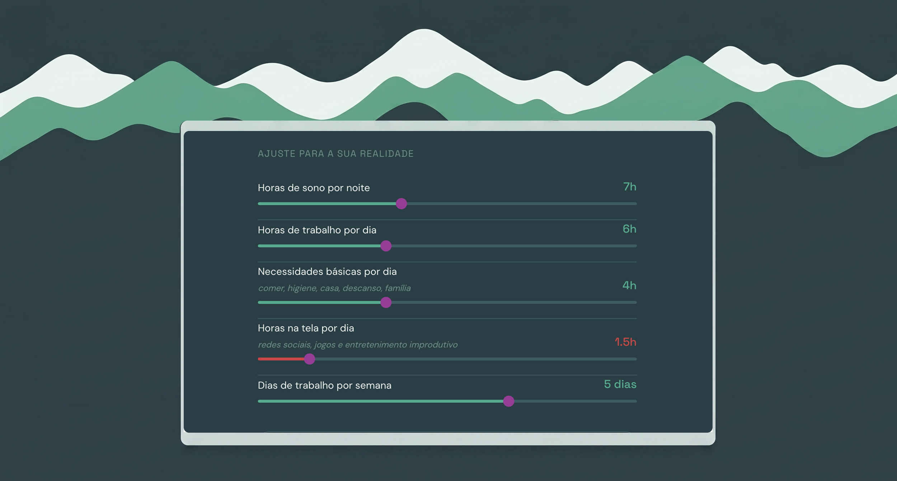
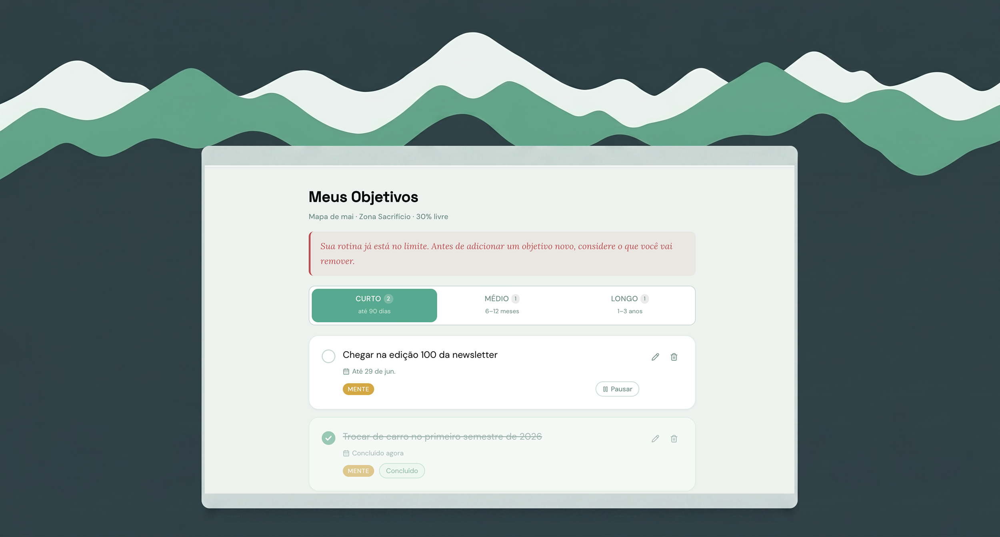
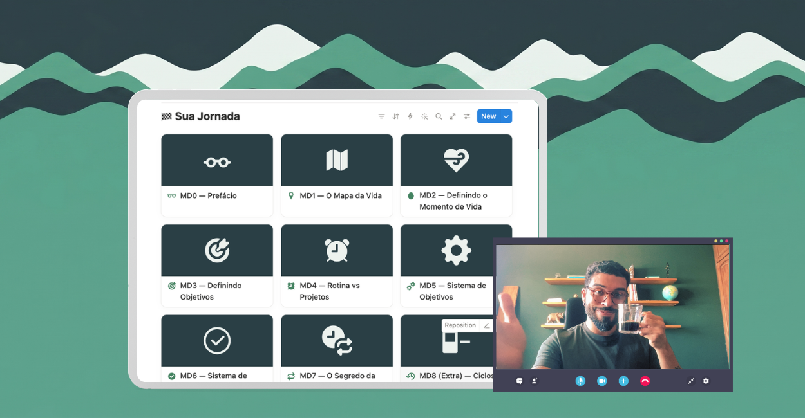

A Trilha é onde profissionais como você constroem uma rotina que sustenta as duas coisas: a carreira que você já tem e o projeto que está parado há meses esperando você ter tempo
ENTRAR NA TRILHA — R$497Em até 3x de R$ 166
Segunda-feira você monta o plano da semana.
Quarta você está apagando incêndio.
Sexta você não abriu o seu projeto pessoal, não foi na academia, comeu o que deu — e ainda terminou o dia às onze da noite respondendo mensagem.
Domingo você pensa: semana que vem vai ser diferente.
Essa é a realidade da maioria das pessoas que trabalham no corporativo.
O trabalho ocupa o dia inteiro e transborda pra noite. O que é seu fica pro fim de uma fila que nunca acaba.
Você organiza a vida dos outros com competência e não consegue organizar a sua. E a culpa vem junto.
Ninguém deveria precisar escolher entre ser bom no trabalho e ter uma vida fora dele.
Funciona pra quem dorme às 21h, não tem filho e não mora onde você mora. Você fecha o notebook às 23h.
Você montou o sistema num domingo com energia. Ele exigia uma manutenção diária que a sua terça-feira não tem.
Você já pediu um cronograma pronto, baixou toda skill de produtividade que achou, montou uma planilha incrível. Nenhuma delas sabia que a sua terça-feira ia virar de cabeça pra baixo.
Nenhum desses métodos falhou por sua causa. Todos assumiram uma vida que não é a sua.
É por isso que você tem um cemitério de ferramentas.

Um framework construído com mais de 10 anos de estudo e consistência
Faça o Mapa da Vida em 10 minutos e análise os pilares da sua vida de forma sistêmica. Monte seu primeiro sistema de organização pessoal já na primeira aula.
Entenda o seu momento de vida, quanto tempo realmente tem na rotina e crie objetivos coerentes que não serão esquecidos daqui 2 semanas.
Suas manhãs voltam a ser suas. O projeto pessoal sai do papel. E quando a semana desandar, você volta do ponto onde parou, sem recomeçar do zero e sem culpa.
Em 2020 eu tocava três empregos. Era mega organizado no trabalho e um caos na vida pessoal. Comecei a ter problemas de saúde e tive o famoso burnout. Algo estava completamente fora do lugar.
Eu só olhava para trabalho. Mudei a minha realidade financeira com muito trampo e apesar disso ainda tinha muito medo de voltar a não ter grana. Resultado? Mais trabalho.
Meu corpo e minha cabeça me obrigaram a parar. Percebi que precisava considerar outros pilares na minha vida.
O Mapa da Vida nasceu aí. Depois de ler um estudo sobre longevidade vi que meu lifestyle estava me matando (literalmente). Criei um esboço e comecei a compartilhar (muita gente adorou e passou a usar também). Mas mapear não era suficiente. Eu sempre criava objetivos demais e parava meus projetos pela metade.
Percebi que precisava de um critério para decidir o que fazia sentido colocar e tirar da minha vida. Vieram a Calculadora de Rotina e o Definidor de Objetivos.
Quando as ferramentas se conectaram, fiquei bem mais consistente e em paz — um alívio depois de tanto tempo frustrado. Veio de ter construído meu próprio método, não um emprestado.
Hoje, apesar da rotina corrida como executivo, cuido da saúde e coloco o trabalho no lugar do trabalho. Moro em Salvador de propósito: cidade de sol, rotina diurna, gente na rua cedo. Treino de manhã porque é a hora que eu decidi que é minha.
É a mesma estrutura que você vai montar na Trilha. A diferença é que a sua vai ser sua, não a minha.
essa é a primeira coisa que você faz na trilha. baseado nos estudos das bluezones ele avalia 3 pilares fundamentais: corpo, mente e espírito. tem coragem?
→ você enxerga onde vai chegar no futuro se continuar assim.
A primeira coisa que você faz na Trilha. 10 minutos
você descobre onde o seu tempo realmente vai para definir os seus objetivos baseado na sua rotina real — e não na rotina dos outros.
→ entenda se você está numa zona de sacrifício ou privilégio.
Parte do tempo que você tem de verdade, não do ideal
crie e acompanhe os seus objetivos de acordo com a sua rotina real e pare de abandonar seus projetos no meio do caminho.
→ não engavete mais seus projetos depois de 2 semanas.
Objetivos que cabem na rotina real, não na imaginada
para aplicar a trilha e construir o seu sistema de organização pessoal.
→ disponíveis desde o primeiro dia, comece a sua jornada agora.
No ar desde o primeiro dia, sem espera
esteja com pessoas incríveis na mesma jornada
siga a trilha e tenha uma plataforma que te ajuda em todas as etapas
participe de desafios que te ajudam a aplicar o que aprendeu
Sessões ao vivo com a comunidade por 4 semanas (pegue a turma que se encaixar na sua rotina)
O ChatGPT não entende que você ficou gripado e não conseguiu treinar. O Notion não sabia que a sua semana desandou.
Ter pessoas na mesma jornada é um reforço positivo — para os dias em que não houver motivação e sobrar culpa.
A vida é mais leve quando compartilhamos a jornada.
Suzana de Miranda · Founder, Enableurs
"O conteúdo já foi tão rico que hoje voltei a correr, o que não conseguia fazer desde fevereiro, praticamente, quando abri mão de muita coisa por conta do trabalho."
"A aula de ontem me fez procurar a personal de novo, pra tentar malhar mesmo sem personal presente em cada treino."
"Foi um misto de terapia + aulas de faculdade + cervejinha depois do trabalho. Eram todos conceitos conhecidos que quando colocados cada um no seu lugar na trilha reduz muito a complexidade de entendê-los e executar."
"Essa semana tá sendo bem difícil. Os pontos sobre autoperdão e não se cobrar tanto estão me ajudando muito. Ter estado nessa jornada e ter acesso a esses materiais com certeza já são um mega passo na vida que eu quero construir."
3x de R$166
ou R$497 à vista
"Essa semana, apesar de ter sido muito corrida, parece que alinhei mais as expectativas comigo mesma. A carga mental foi muito menor."
Seu acesso começa hoje. Se não for para você, me manda uma mensagem em até 14 dias e eu devolvo tudo.
tem dúvida antes de decidir? me manda uma mensagem.